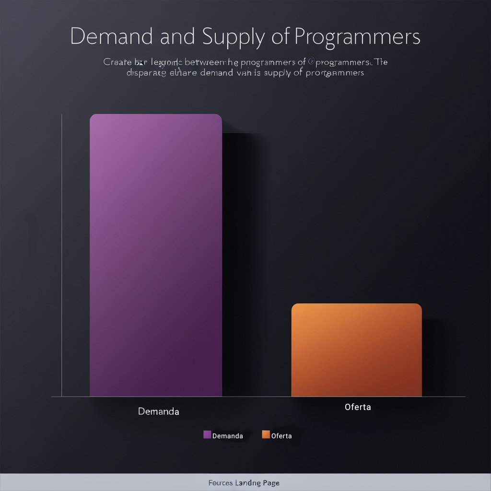

Moldando o Futuro Digital das Novas Gerações
Na TecnoKids, capacitamos crianças e adolescentes para que dominem o mundo digital, tornando-os prontos para as oportunidades do amanhã.
A TecnoKids é uma escola de programação infantil que visa transformar crianças em futuros profissionais de tecnologia. Através de programas práticos e focados em HTML, CSS e JavaScript, preparamos nossos alunos para uma carreira de sucesso no mercado digital.
O Desafio: A Tecnologia Avança Mais Rápido do que a Formação de Profissionais
O mundo está cada vez mais digital e a demanda por profissionais de tecnologia cresce exponencialmente. Hoje, o número de empresas que necessitam de programadores já supera o número de profissionais formados. Estamos diante de uma lacuna no mercado: crianças e jovens não estão sendo preparados para os desafios digitais, e a maioria das escolas tradicionais ainda não integra o ensino de programação em seus currículos.
O futuro digital não espera – ele precisa de profissionais capacitados hoje. A TecnoKids: Preparando as Crianças para um Futuro Digital Brilhante
Na TecnoKids, oferecemos um ambiente de aprendizado prático e estimulante onde crianças e adolescentes desenvolvem habilidades de programação, essenciais para o mercado de trabalho digital. Através de nossos programas exclusivos em HTML, CSS e JavaScript, capacitamos nossos alunos com o que realmente importa para o futuro, com uma metodologia interativa que transforma o aprendizado em uma experiência divertida e significativa.
Educação Relevante: Focamos em conteúdos que estão em alta demanda no mercado de trabalho.
Ambiente Interativo: Nossos programas são pensados para ensinar de forma prática e aplicada.
Preparação para o Futuro: Capacitar crianças agora é moldar os líderes e profissionais de amanhã.
Nossos Programas
Oferecemos uma formação completa em linguagens de programação, focando em HTML, CSS e JavaScript – os pilares da web moderna. Nossos programas foram desenhados para crianças e adolescentes aprenderem de forma divertida e interativa.
HTML para Crianças:
Aprendizado prático e criativo para construir as bases da internet.
CSS Interativo:
Transformando ideias em realidade visual – do design à prática.
JavaScript Descomplicado:
A programação que dá vida aos sites e desenvolve o raciocínio lógico.
Impacto e Resultados: Testemunhos de Sucesso

'Minha filha sempre amou tecnologia, mas foi na TecnoKids que ela realmente descobriu seu potencial. Agora, ela já está criando projetos e sonhando em ser programadora!'
'Aprender programação na TecnoKids é como brincar e aprender ao mesmo tempo. Adoro!'
+50 alunos formados em um ano.
80% dos nossos alunos avançam para projetos mais complexos em menos de seis meses.
Junte-se a Nós para Construir um Futuro Digital Melhor
Investir na TecnoKids é mais do que apoiar uma escola de programação; é acreditar em um futuro onde as crianças de hoje se tornarão os líderes digitais de amanhã. Com seu apoio, podemos expandir nossos programas, alcançar mais crianças e ajudar a preencher a lacuna de profissionais capacitados para o mercado digital.
Impacto Social:
Contribuir para uma educação tecnológica inclusiva.
Participação em um Mercado Crescente:
O mercado de educação digital está em expansão e a TecnoKids está preparada para ser uma referência.
Retorno Financeiro:
A expansão dos programas abre portas para novas parcerias e oportunidades de crescimento.
Invista no Futuro da Educação Digital Hoje!
A TecnoKids acredita que toda criança merece a chance de dominar as habilidades do futuro. Ao investir em nós, você se torna parte de uma transformação global na educação e capacita novas gerações para vencerem os desafios da era digital.